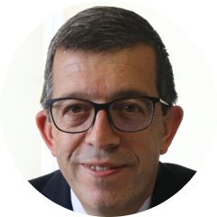

Résumé du congrès ERA-EDTA 2021 7 septembre 2021 19:00 CEST
Aperçu de l'anémie et de l'IRC du 58e Congrès virtuel ERA-EDTA, du 5 au 8 juin 2021
Introduction
L'anémie est une complication bien connue et courante de l'insuffisance rénale chronique (IRC), qui est associée à une morbidité et une mortalité accrues, ainsi qu'à une qualité de vie dégradée. Elle est le résultat de plusieurs mécanismes complexes, tels qu'une diminution de l'érythropoïétine (EPO) endogène, une carence en fer et/ou une inflammation avec des niveaux élevés d'hepcidine. Les patients sont fréquemment traités par des agents stimulant l'érythropoïèse (ASE) et/ou une supplémentation en fer par voie orale ou intraveineuse. Cependant, ces traitements sont parfois insuffisants. Les inhibiteurs de la prolyl hydroxylase du facteur induit par l'hypoxie (HIF-PH), une nouvelle famille de médicaments, se sont révélés capables d'induire une augmentation de la production d'EPO endogène, d'améliorer la disponibilité du fer et de réduire les taux d'hepcidine.
Dans ce webinaire en direct, quatre experts internationaux en néphrologie passeront en revue, à travers le prisme du congrès ERA-EDTA 2021 de cette année, les principaux développements dans le domaine de l'anémie liée à l’IRC, notamment la physiopathologie, les thérapies actuelles et futures, les tendances de prise en charge des patients et les lacunes dans la pratique.
Find out morePublic cible
Cette activité s'adresse aux professionnels de la santé intéressés par l'anémie et l'IRC, à savoir (entre autres) les néphrologues, les cardiologues, les internistes, les endocrinologues et les médecins généralistes.
Objectifs de formation
Les patients atteints d'IRC, qu'ils soient sous dialyse ou non, présentent fréquemment une anémie. Les cliniciens doivent connaître les dernières avancées scientifiques et thérapeutiques dans ce domaine afin d'être en mesure de proposer un traitement efficace et éprouvé. D'autre part, pour diverses raisons, notamment la pandémie de COVID-19, les cliniciens peuvent ne pas être en mesure de participer à des événements de formation. Par conséquent, ce webinaire en direct vise à fournir un résumé des derniers développements scientifiques, directives de pratique et stratégies de traitement les plus significatifs, afin d'améliorer les résultats des patients souffrant d'anémie liée à l’IRC
Objectifs
- Décrire les traitements actuels et les besoins non satisfaits dans l'anémie liée à l’IRC
- Évaluer l'impact de l'anémie sur le risque cardiovasculaire chez les patients insuffisant rénaux chroniques
- Analyser les différentes options de traitement disponibles, notamment en ce qui concerne l'utilisation des inhibiteurs de HIF-PH par rapport au traitement de référence
- Comprendre le rôle des inhibiteurs de HIF-PH dans le traitement de l'anémie liée à l’IRC.
- Décrire les effets indésirables les plus fréquents des différents médicaments utilisés dans le traitement de l'anémie liée à l’IRC
- Évaluer de manière critique les essais cliniques les plus récents/importants sur le traitement de l'anémie liée à l’IRC, en mettant l'accent sur les communications présentées au Congrès virtuel ERA-EDTA 2021
Faculté:

Pablo Ureña Torres MD PhD
Clinique du Landy, Saint Ouen, & Hôpital Necker-Enfants Malades, Paris - France (Président)

Evgeny Shutov MD
Botkin Clinical City Hospital & Russian Medical Academy of Continuous Professional
Francesco Locatelli MD FRCPB
Hôpital Alessandro Manzoni, Lecco, Italie
- 
Mustafa Arıcı MD FERA
Faculté de médecine de l'Université Hacettepe, Département de néphrologie, Ankara - Turquie
Déclarations financières
Cet événement de formation médicale indépendant a été financé par Astellas. Astellas a financé les honoraires des intervenants et les coûts d'organisation.
Le programme éducatif a été élaboré par avec le soutien de l'ERA-EDTA et les auteurs des communications concernées. Aucun membre de SEI Healthcare LLC n'a signalé de relations financières personnelles pertinentes.
Divulgations des orateurs
- Dr. Ureña Torres - Divulgation à confirmer
- Le professeur Shutov a reçu des honoraires de conférencier de la part d'Amgen, d'Astellas et de Frenesius Kabi, et a été consultant dans des conseils consultatifs pour ces sociétés..
- Le professeur Locatelli a été consultant dans des conseils consultatifs pour Amgen, Astellas, AstraZeneca, Baxter, FibroGen, GSK, Norgine, Otsuka, Roche et Vifor-Pharma. Il a reçu des honoraires de conférencier pour sa participation à des événements financés par des subventions sans restriction d'Akebia, Amgen, Astellas, AstraZeneca, Bayer, B. Braun, Roche et Vifor-Pharma.
- Le professeur Arıcı a reçu des honoraires de conférencier de la part d'Amgen, Astellas, AstraZeneca, Bayer, Baxter, Boehringer Ingelheim, Menarini, MSD, Novo Nordisk, Sandoz et Sanofi.
Réviseur FMC
August Felix, BSc MSc
Directeur de l'éducation indépendante, SEI Healthcare
Divulgation : August Felix n'a révélé aucune relation financière pertinente.
Pair examinateur
Cette activité a été examinée par un pair qui n'a révélé aucune relation financière pertinente.
Rédactrice en chef
Rita Aresta, MD
Responsable du contenu scientifique, SEI Healthcare
Divulgation : Rita Aresta n'a révélé aucune relation financière pertinente.
Déclaration d'accréditation
Cette activité a été planifiée et mise en œuvre conformément aux exigences et aux politiques d'accréditation de l'Accreditation Council for Continuing Medical Education (ACCME) par le biais de la prestation conjointe d'Oakstone Publishing et de SEI Healthcare LLC.
Oakstone Publishing est accréditée par l'ACCME pour dispenser une formation médicale continue aux médecins.
Oakstone Publishing désigne cette activité en direct pour un maximum de 2 crédits AMA PRA de catégorie 1™️. Les médecins ne doivent réclamer que le crédit correspondant à l'étendue de leur participation à cette activité.